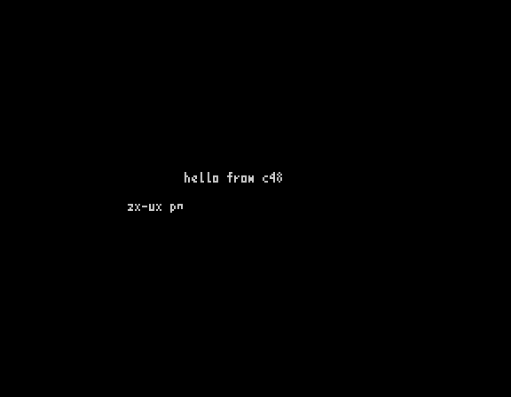
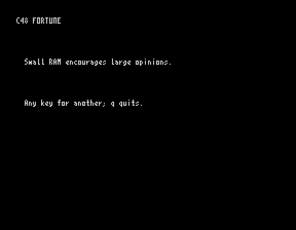
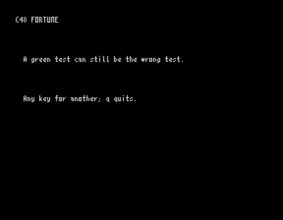
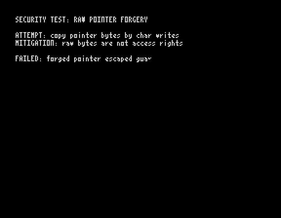
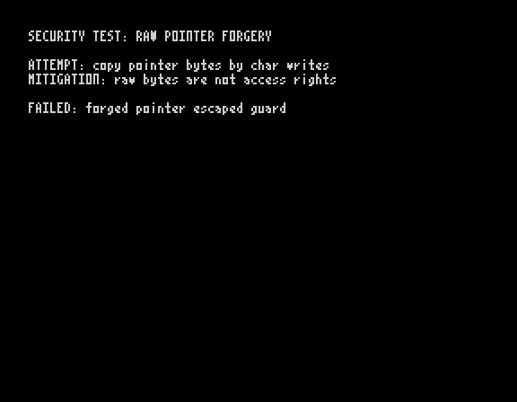

hello


Genuine screen captures from two different local runtimes. The left side runs the checked C48 program on the ZX Spectrum emulator with ZX-UX loaded from tape. The right side runs the same compiled file in ZX-UX SDK rvm. The separate upstream C48 reference VM was not run.
Source, command and test details






